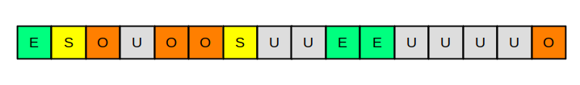
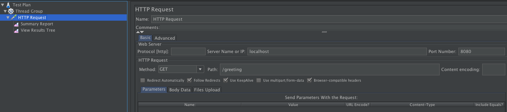
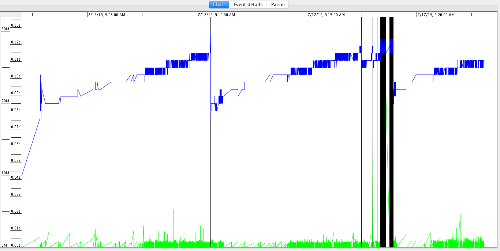
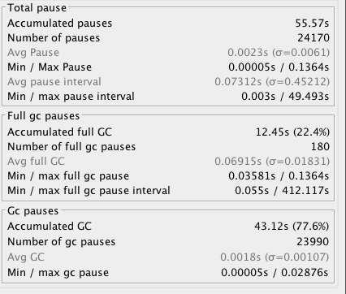
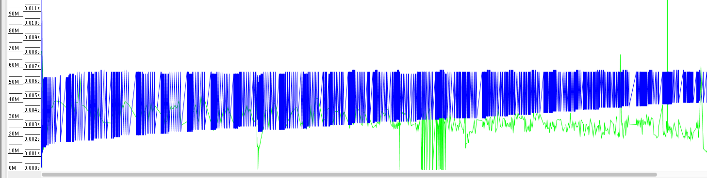
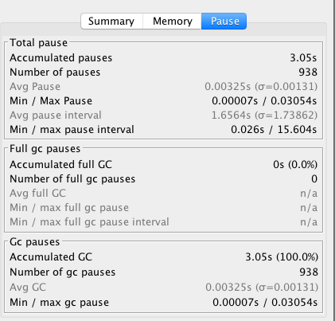

- 00 开篇词 Java程序员如何快速成长？.md.html
- 01 Web容器学习路径.md.html
- 02 HTTP协议必知必会.md.html
- 03 你应该知道的Servlet规范和Servlet容器.md.html
- 04 实战：纯手工打造和运行一个Servlet.md.html
- 05 Tomcat系统架构（上）： 连接器是如何设计的？.md.html
- 06 Tomcat系统架构（下）：聊聊多层容器的设计.md.html
- 07 Tomcat如何实现一键式启停？.md.html
- 08 Tomcat的“高层们”都负责做什么？.md.html
- 09 比较：Jetty架构特点之Connector组件.md.html
- 10 比较：Jetty架构特点之Handler组件.md.html
- 11 总结：从Tomcat和Jetty中提炼组件化设计规范.md.html
- 12 实战：优化并提高Tomcat启动速度.md.html
- 13 热点问题答疑（1）：如何学习源码？.md.html
- 14 NioEndpoint组件：Tomcat如何实现非阻塞I_O？.md.html
- 15 Nio2Endpoint组件：Tomcat如何实现异步I_O？.md.html
- 16 AprEndpoint组件：Tomcat APR提高I_O性能的秘密.md.html
- 17 Executor组件：Tomcat如何扩展Java线程池？.md.html
- 18 新特性：Tomcat如何支持WebSocket？.md.html
- 19 比较：Jetty的线程策略EatWhatYouKill.md.html
- 20 总结：Tomcat和Jetty中的对象池技术.md.html
- 21 总结：Tomcat和Jetty的高性能、高并发之道.md.html
- 22 热点问题答疑（2）：内核如何阻塞与唤醒进程？.md.html
- 23 Host容器：Tomcat如何实现热部署和热加载？.md.html
- 24 Context容器（上）：Tomcat如何打破双亲委托机制？.md.html
- 25 Context容器（中）：Tomcat如何隔离Web应用？.md.html
- 26 Context容器（下）：Tomcat如何实现Servlet规范？.md.html
- 27 新特性：Tomcat如何支持异步Servlet？.md.html
- 28 新特性：Spring Boot如何使用内嵌式的Tomcat和Jetty？.md.html
- 29 比较：Jetty如何实现具有上下文信息的责任链？.md.html
- 30 热点问题答疑（3）：Spring框架中的设计模式.md.html
- 31 Logger组件：Tomcat的日志框架及实战.md.html
- 32 Manager组件：Tomcat的Session管理机制解析.md.html
- 33 Cluster组件：Tomcat的集群通信原理.md.html
- 34 JVM GC原理及调优的基本思路.md.html
- 35 如何监控Tomcat的性能？.md.html
- 36 Tomcat I_O和线程池的并发调优.md.html
- 37 Tomcat内存溢出的原因分析及调优.md.html
- 38 Tomcat拒绝连接原因分析及网络优化.md.html
- 39 Tomcat进程占用CPU过高怎么办？.md.html
- 40 谈谈Jetty性能调优的思路.md.html
- 41 热点问题答疑（4）： Tomcat和Jetty有哪些不同？.md.html
- 特别放送 如何持续保持对学习的兴趣？.md.html
- 结束语 静下心来，品味经典.md.html
- 捐赠
34 JVM GC原理及调优的基本思路
和Web应用程序一样，Tomcat作为一个Java程序也跑在JVM中，因此如果我们要对Tomcat进行调优，需要先了解JVM调优的原理。而对于JVM调优来说，主要是JVM垃圾收集的优化，一般来说是因为有问题才需要优化，所以对于JVM GC来说，如果你观察到Tomcat进程的CPU使用率比较高，并且在GC日志中发现GC次数比较频繁、GC停顿时间长，这表明你需要对GC进行优化了。
在对GC调优的过程中，我们不仅需要知道GC的原理，更重要的是要熟练使用各种监控和分析工具，具备GC调优的实战能力。CMS和G1是时下使用率比较高的两款垃圾收集器，从Java 9开始，采用G1作为默认垃圾收集器，而G1的目标也是逐步取代CMS。所以今天我们先来简单回顾一下两种垃圾收集器CMS和G1的区别，接着通过一个例子帮你提高GC调优的实战能力。
CMS vs G1
CMS收集器将Java堆分为年轻代（Young）或年老代（Old）。这主要是因为有研究表明，超过90％的对象在第一次GC时就被回收掉，但是少数对象往往会存活较长的时间。
CMS还将年轻代内存空间分为幸存者空间（Survivor）和伊甸园空间（Eden）。新的对象始终在Eden空间上创建。一旦一个对象在一次垃圾收集后还幸存，就会被移动到幸存者空间。当一个对象在多次垃圾收集之后还存活时，它会移动到年老代。这样做的目的是在年轻代和年老代采用不同的收集算法，以达到较高的收集效率，比如在年轻代采用复制-整理算法，在年老代采用标记-清理算法。因此CMS将Java堆分成如下区域：
与CMS相比，G1收集器有两大特点：
- G1可以并发完成大部分GC的工作，这期间不会“Stop-The-World”。
- G1使用非连续空间，这使G1能够有效地处理非常大的堆。此外，G1可以同时收集年轻代和年老代。G1并没有将Java堆分成三个空间（Eden、Survivor和Old），而是将堆分成许多（通常是几百个）非常小的区域。这些区域是固定大小的（默认情况下大约为2MB）。每个区域都分配给一个空间。 G1收集器的Java堆如下图所示：

图上的U表示“未分配”区域。G1将堆拆分成小的区域，一个最大的好处是可以做局部区域的垃圾回收，而不需要每次都回收整个区域比如年轻代和年老代，这样回收的停顿时间会比较短。具体的收集过程是：
- 将所有存活的对象将从收集的区域复制到未分配的区域，比如收集的区域是Eden空间，把Eden中的存活对象复制到未分配区域，这个未分配区域就成了Survivor空间。理想情况下，如果一个区域全是垃圾（意味着一个存活的对象都没有），则可以直接将该区域声明为“未分配”。
- 为了优化收集时间，G1总是优先选择垃圾最多的区域，从而最大限度地减少后续分配和释放堆空间所需的工作量。这也是G1收集器名字的由来——Garbage-First。
GC调优原则
GC是有代价的，因此我们调优的根本原则是每一次GC都回收尽可能多的对象，也就是减少无用功。因此我们在做具体调优的时候，针对CMS和G1两种垃圾收集器，分别有一些相应的策略。
CMS收集器
对于CMS收集器来说，最重要的是合理地设置年轻代和年老代的大小。年轻代太小的话，会导致频繁的Minor GC，并且很有可能存活期短的对象也不能被回收，GC的效率就不高。而年老代太小的话，容纳不下从年轻代过来的新对象，会频繁触发单线程Full GC，导致较长时间的GC暂停，影响Web应用的响应时间。
G1收集器
对于G1收集器来说，我不推荐直接设置年轻代的大小，这一点跟CMS收集器不一样，这是因为G1收集器会根据算法动态决定年轻代和年老代的大小。因此对于G1收集器，我们需要关心的是Java堆的总大小（-Xmx）。
此外G1还有一个较关键的参数是-XX:MaxGCPauseMillis = n，这个参数是用来限制最大的GC暂停时间，目的是尽量不影响请求处理的响应时间。G1将根据先前收集的信息以及检测到的垃圾量，估计它可以立即收集的最大区域数量，从而尽量保证GC时间不会超出这个限制。因此G1相对来说更加“智能”，使用起来更加简单。
内存调优实战
下面我通过一个例子实战一下Java堆设置得过小，导致频繁的GC，我们将通过GC日志分析工具来观察GC活动并定位问题。
1.首先我们建立一个Spring Boot程序，作为我们的调优对象，代码如下：
@RestController
public class GcTestController {
private Queue<Greeting> objCache = new ConcurrentLinkedDeque<>();
@RequestMapping("/greeting")
public Greeting greeting() {
Greeting greeting = new Greeting("Hello World!");
if (objCache.size() >= 200000) {
objCache.clear();
} else {
objCache.add(greeting);
}
return greeting;
}
}
@Data
@AllArgsConstructor
class Greeting {
private String message;
}
上面的代码就是创建了一个对象池，当对象池中的对象数到达200000时才清空一次，用来模拟年老代对象。
2.用下面的命令启动测试程序：
java -Xmx32m -Xss256k -verbosegc -Xlog:gc*,gc+ref=debug,gc+heap=debug,gc+age=trace:file=gc-%p-%t.log:tags,uptime,time,level:filecount=2,filesize=100m -jar target/demo-0.0.1-SNAPSHOT.jar
我给程序设置的堆的大小为32MB，目的是能让我们看到Full GC。除此之外，我还打开了verbosegc日志，请注意这里我使用的版本是Java 12，默认的垃圾收集器是G1。
3.使用JMeter压测工具向程序发送测试请求，访问的路径是/greeting。

4.使用GCViewer工具打开GC日志，我们可以看到这样的图：

我来解释一下这张图：
- 图中上部的蓝线表示已使用堆的大小，我们看到它周期的上下震荡，这是我们的对象池要扩展到200000才会清空。
- 图底部的绿线表示年轻代GC活动，从图上看到当堆的使用率上去了，会触发频繁的GC活动。
- 图中的竖线表示Full GC，从图上看到，伴随着Full GC，蓝线会下降，这说明Full GC收集了年老代中的对象。
基于上面的分析，我们可以得出一个结论，那就是Java堆的大小不够。我来解释一下为什么得出这个结论：
- GC活动频繁：年轻代GC（绿色线）和年老代GC（黑色线）都比较密集。这说明内存空间不够，也就是Java堆的大小不够。
- Java的堆中对象在GC之后能够被回收，说明不是内存泄漏。
我们通过GCViewer还发现累计GC暂停时间有55.57秒，如下图所示：

因此我们的解决方案是调大Java堆的大小，像下面这样：
java -Xmx2048m -Xss256k -verbosegc -Xlog:gc*,gc+ref=debug,gc+heap=debug,gc+age=trace:file=gc-%p-%t.log:tags,uptime,time,level:filecount=2,filesize=100m -jar target/demo-0.0.1-SNAPSHOT.jar
生成的新的GC log分析图如下：

你可以看到，没有发生Full GC，并且年轻代GC也没有那么频繁了，并且累计GC暂停时间只有3.05秒。

本期精华
今天我们首先回顾了CMS和G1两种垃圾收集器背后的设计思路以及它们的区别，接着分析了GC调优的总体原则。
对于CMS来说，我们要合理设置年轻代和年老代的大小。你可能会问该如何确定它们的大小呢？这是一个迭代的过程，可以先采用JVM的默认值，然后通过压测分析GC日志。
如果我们看年轻代的内存使用率处在高位，导致频繁的Minor GC，而频繁GC的效率又不高，说明对象没那么快能被回收，这时年轻代可以适当调大一点。
如果我们看年老代的内存使用率处在高位，导致频繁的Full GC，这样分两种情况：如果每次Full GC后年老代的内存占用率没有下来，可以怀疑是内存泄漏；如果Full GC后年老代的内存占用率下来了，说明不是内存泄漏，我们要考虑调大年老代。
对于G1收集器来说，我们可以适当调大Java堆，因为G1收集器采用了局部区域收集策略，单次垃圾收集的时间可控，可以管理较大的Java堆。
课后思考
如果把年轻代和年老代都设置得很大，会有什么问题？
不知道今天的内容你消化得如何？如果还有疑问，请大胆的在留言区提问，也欢迎你把你的课后思考和心得记录下来，与我和其他同学一起讨论。如果你觉得今天有所收获，欢迎你把它分享给你的朋友。
© 2019 - 2023 Liangliang Lee. Powered by gin and hexo-theme-book.